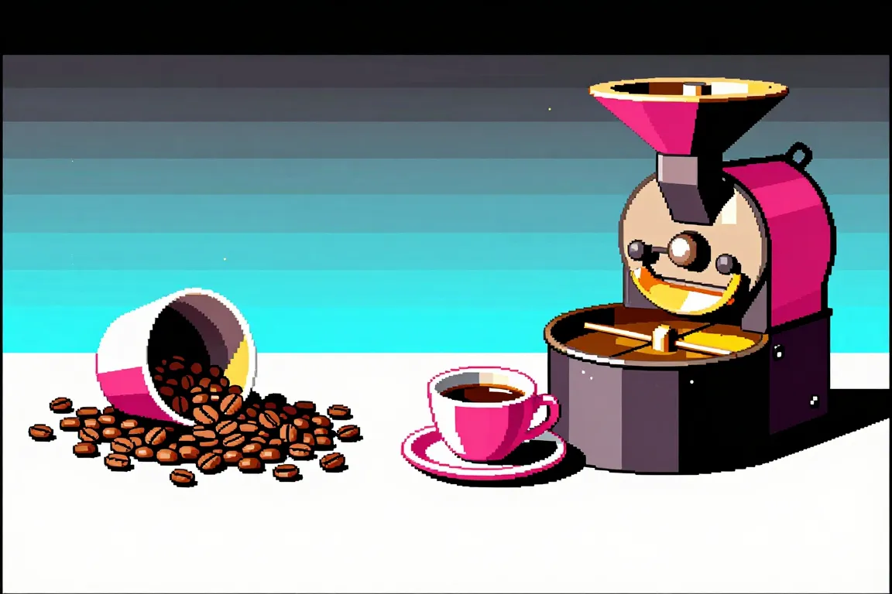

internet · 1985–1996 · also: ANSI art, BBS art, Artpack
Pictures and menus made of 80-column text blocks in the 16 ANSI colours: shade characters, box lines and wide logos. Dial-up bulletin boards showed them, and art groups released them in monthly packs.

Core thesis
A picture is a grid of characters: every shape must fit an 8 by 16 pixel cell and one of 16 colours.
Design principles
Build the layout on a grid of 80 columns by 25 rows; one cell is 8px wide and 16px high.
Use only the 16 ANSI colours, on a black ground (#000000), and show 8 colours as the dark set and 8 as the bright set.
Shade with block characters: light shade ░ at 25%, medium shade ▒ at 50%, dark shade ▓ at 75%, full block █ at 100%.
Frame menus and windows with double-line box characters ╔ ═ ╗ and keep the frame 1 cell wide.
Set the signature logo 6 to 10 rows high in a block font, with a 3-stop colour fade from dark blue to cyan to white.
Put a status bar of 1 row at the foot of the screen, white on blue, with key hints in brackets.
Blink one cursor block at 530ms; reveal long screens line by line at 1 row per 40ms to imitate a 28.8 kbps modem.